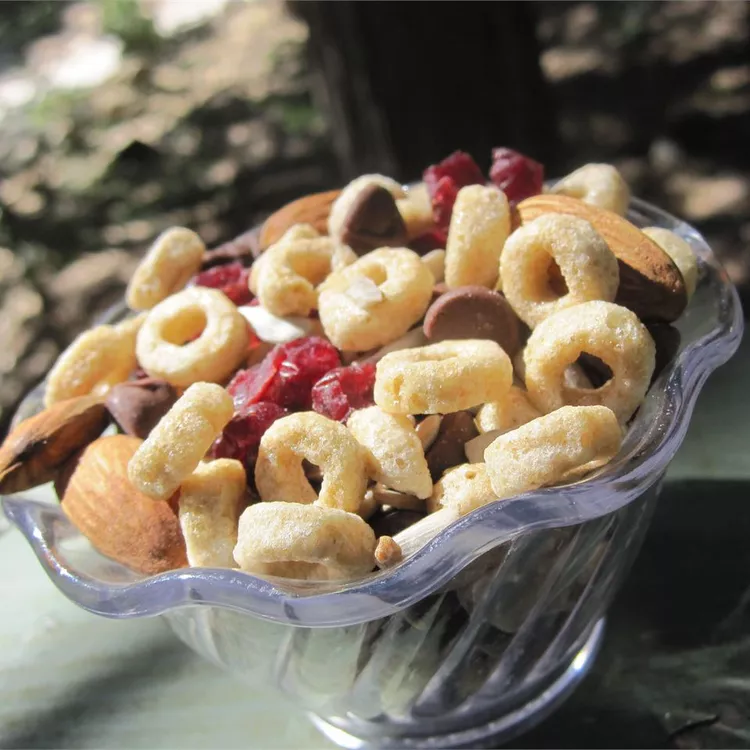

Ingredients
- 6 cups honey-oat cereal
- 2 cups peanuts
- 1 cup dried cranberries
- 1 cup carob chips
- ½ cup sunflower seeds
Steps
- 1. Combine the cereal, peanuts, cranberries, carob chips, and sunflower seeds in a mixing bowl.
- 2. Store at room temperature in an airtight container.